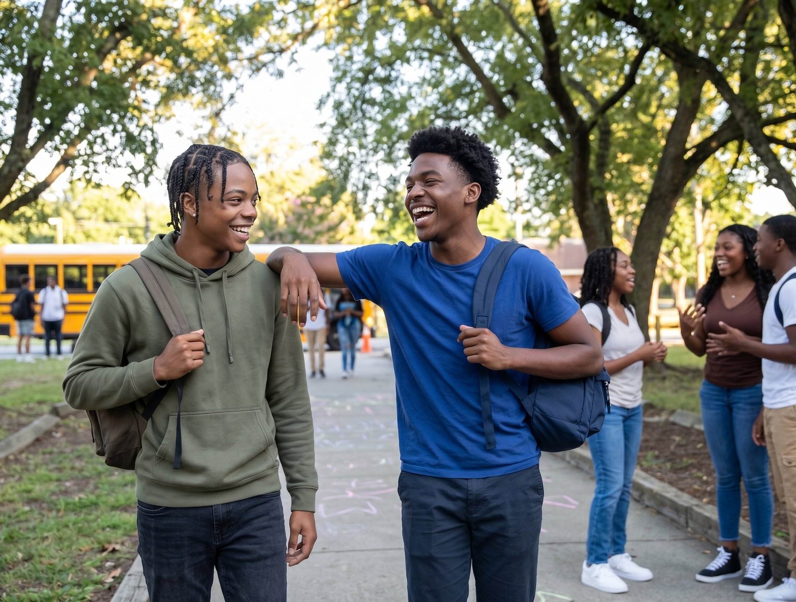

RVA Builds connects Richmond Public Schools students with paid, hands-on careers in construction and the skilled trades — before they even graduate. A Richmond Ed Fund initiative, backed by Bloomberg Philanthropies.
The primary logo is full color on a white background. Use this version wherever possible.
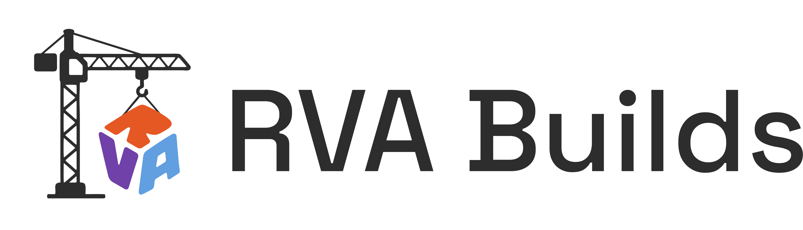
The logo can also be used on a contextually colored background, as long as there's contrast.
For square or vertical placements — social avatars, signage, mobile headers.
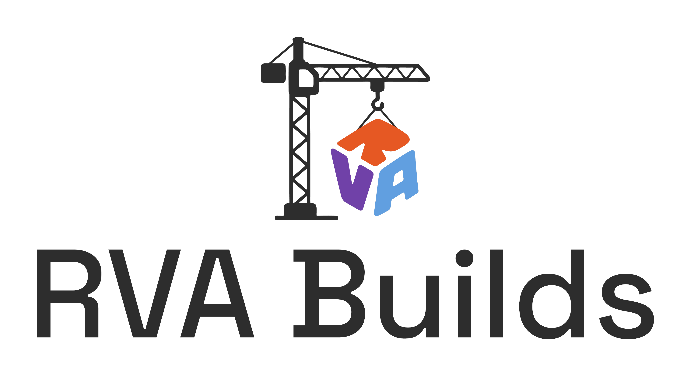
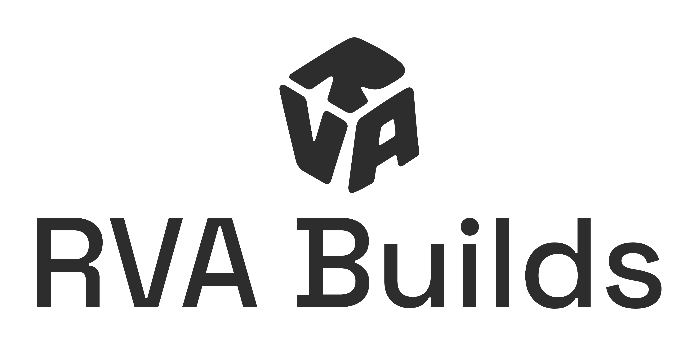
No image or background should ever compete with the mark's clarity, and it must always appear in an approved color combination.
These colors represent the identity of RVA Builds — meant to build trust between candidates and employers.
These create contrast against the main palette and should be used sparingly, for text, surfaces, and system states.
Two contrasting typefaces: Montserrat for headlines, Lato for body. Both are standard Google Workspace fonts. Weights can vary, as long as the text stays legible.
Hopeful, trustworthy, civic, warm, data-informed, editorial.
Approved leadership quotes, paired with headshots for editorial and press use.
Every photo used in RVA Builds materials should show real working people, with genuine range in age, background, and trade.
Stock imagery and illustration should not be used.
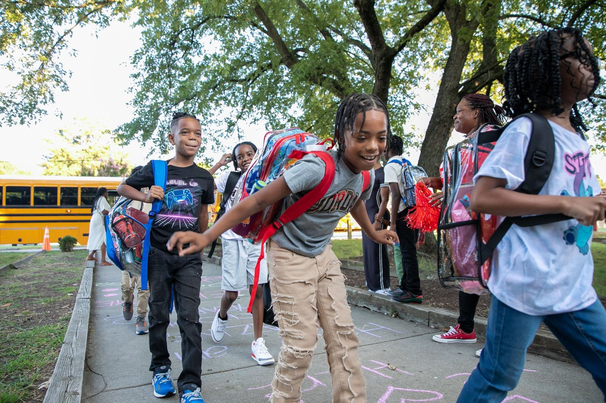
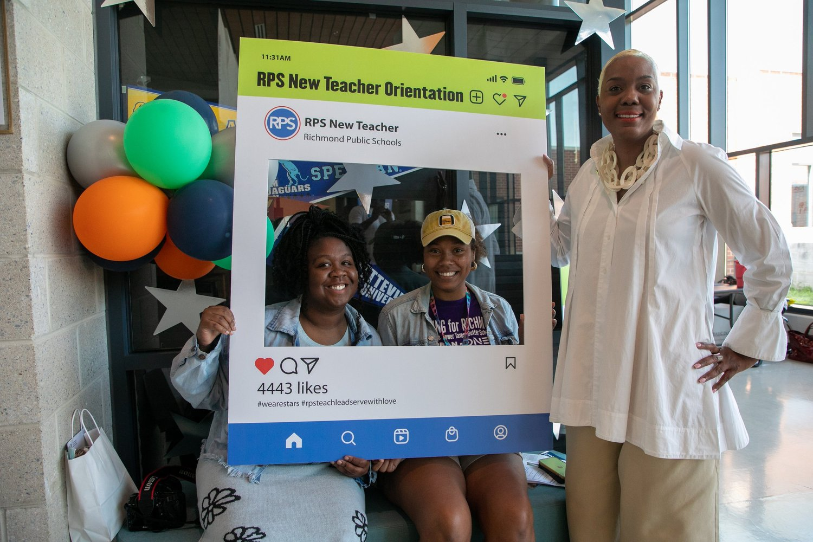
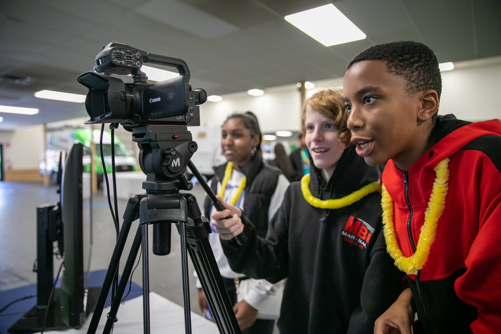
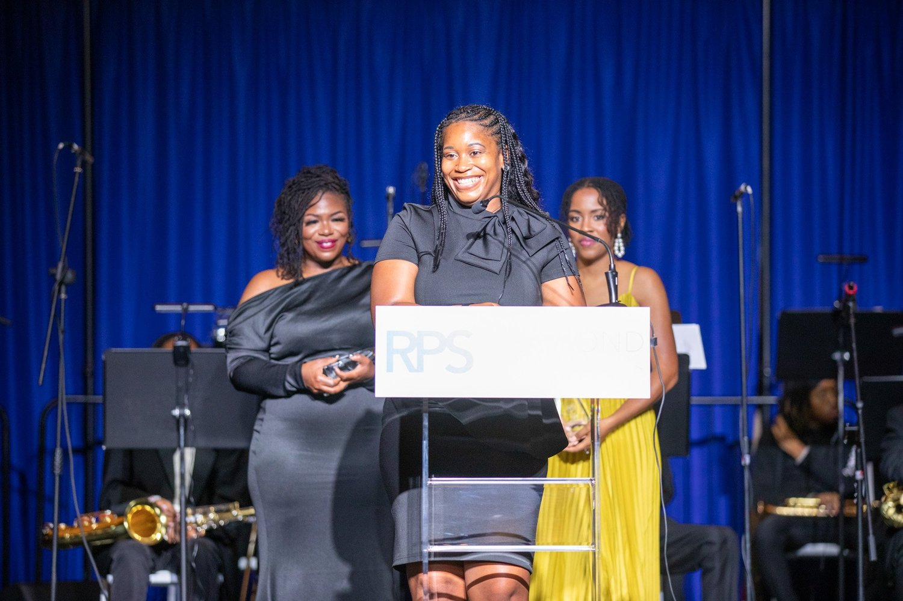